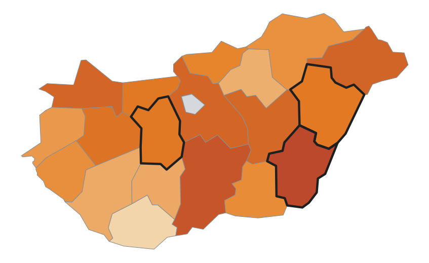
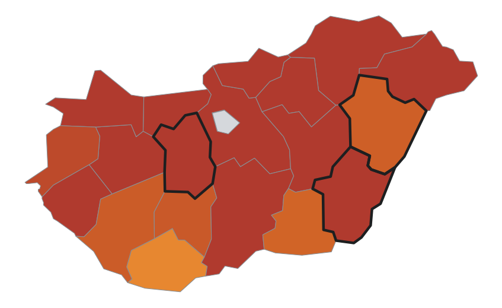
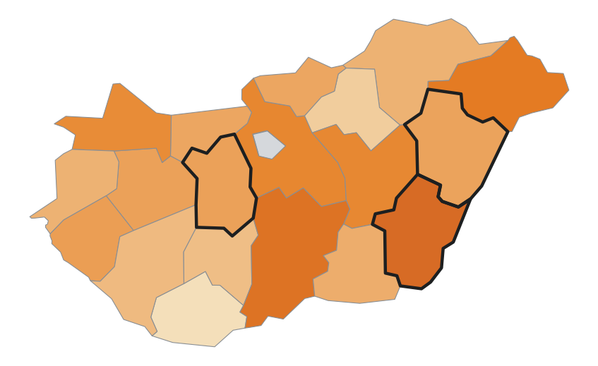

Ma a lényeg
A három termény együtt ~750 mrd Ft termelési értéket ígér — −125 mrd Ft a szokásoshoz képest.
A legutolsó hivatalos (2024-es) termelői árakon számolva — indikatív becslés.
A hozamok vármegyei statisztikai modellből (KSH 2000-től + ERA5 időjárás) származnak. A búza és őszi árpa szezonja gyakorlatilag lezárult; a kukorica becslése a hátralévő napokban még változhat.
Trend-alapú termények — a sokéves trend, nem időjárás-informált
Területi kép



Fókusz-vármegyék — Békés · Hajdú-Bihar · Fejér
| Termény | Becslés | vs. szokásos | vs. országos | Eltérés a szokásostól |
|---|---|---|---|---|
| Békés | ||||
| búza | 4,71 t/ha | −17,7% | −0,47 | |
| kukorica | 4,70 t/ha | −32,0% | −0,85 | |
| őszi árpa | 5,18 t/ha | −12,7% | −0,42 | |
| Hajdú-Bihar | ||||
| búza | 5,31 t/ha | −10,6% | +0,13 | |
| kukorica | 6,65 t/ha | −14,5% | +1,10 | |
| őszi árpa | 5,68 t/ha | −6,5% | +0,08 | |
| Fejér | ||||
| búza | 5,57 t/ha | −10,8% | +0,39 | |
| kukorica | 5,25 t/ha | −30,4% | −0,30 | |
| őszi árpa | 6,20 t/ha | −6,7% | +0,60 | |
A bar a szokásos hozamtól való eltérést mutatja (skála ±20%); a függőleges vonás a 0%. „vs. országos" oszlop: t/ha eltérés az országos becsléshez képest.
Szezonközi kilátás — kukorica
A kukorica idei termése 5,55 t/ha körül várható, ami 21,2%-kal marad el a sokéves szokásos szinttől. 2024-es árakon számolva ez kb. 76 mrd Ft kiesést jelent. Tavalyhoz (2025) képest ez +5,3%-os javulás, a megszokott szinttől azonban elmarad.
A szezonból még 19 nap van hátra; a végeredmény az időjárástól függően 5,41–5,70 t/ha között alakulhat. A becslés tipikus tévedése a múltbeli visszamérések alapján ±19,1%.
Terményben és forintban
| Forgatókönyv | t/ha | M tonna | mrd Ft* |
|---|---|---|---|
| Kedvezőtlen | 5,41 | 3,99 | 276 |
| Középső | 5,55 | 4,09 | 283 |
| Kedvező | 5,70 | 4,20 | 291 |
*2024-es termelői átlagáron (69 260 Ft/t) és a legutóbbi lezárt évi vetésterülettel (737 ezer ha) számolva — indikatív.
Fókusz-vármegyék — kilátás és időjárás
| Vármegye | Becslés | várható sáv | Hőstressz | Vízmérleg | Csapadék |
|---|---|---|---|---|---|
| Békés | 4,70 t/ha | 4,55–4,88 | 10 nap | −689 mm | 154 mm |
| Hajdú-Bihar | 6,65 t/ha | 6,51–6,80 | 5 nap | −617 mm | 147 mm |
| Fejér | 5,25 t/ha | 5,10–5,42 | 7 nap | −697 mm | 126 mm |
Vízmérleg: a csapadék és a párolgás egyenlege a szezon eddigi részében — minél negatívabb, annál erősebb az aszálynyomás.
Módszertan. Vármegyei panel lineáris regresszió a KSH 2000 óta mért hozamaira és az ERA5 időjárásra: a fajta és technológiai fejlődést közös trend, a vármegyei adottságokat rögzített hatás kezeli, öntözést, talajtípust és fajtaszerkezetet nem. A 80%-os sáv a becslés predikciós intervalluma, a modell múltból jósló, tesztéven kívüli tévedéseinek eloszlásából (visszamérés 2011 és 2025 között); a tipikus tévedés ennek szokásos nagysága a trendszinthez mérve (búza 7,7%, kukorica 19,1%, árpa 7,2%), a sáv ennél mintegy 1,3-szer szélesebb. A termelési érték a hozam, a terület és a 2024-es ár szorzata, volumen alapú indikátor, nem bevételi előrejelzés. Nem hivatalos adat. Részletes leírás és visszamérés: prettyasap.github.io/wheat-forecast/magyarazat.html. Források: KSH, Open-Meteo (ERA5), Eurostat.
Piaci árjegyzések
| Termék | Jegyzés | Egység | Időszak | Kör |
|---|---|---|---|---|
| Olajos termékek | ||||
| Napraforgómag | 529,16 | EUR/t | aug. 24–30. | HU |
| Repcemag | 542,06 | EUR/t | aug. 24–30. | HU |
| Napraforgódara | 215,02 | EUR/t | aug. 24–30. | HU |
| Repcedara | 269,46 | EUR/t | aug. 17–23. | HU |
| Napraforgóolaj (nyers) | 1 211,66 | EUR/t | aug. 24–30. | HU |
| Szójadara | 417,93 | EUR/t | aug. 24–30. | EU-átlag (4 tagállam; HU-jegyzés nincs) |
| Sertés | ||||
| Vágósertés (hasított, S oszt.) | 174,77 | EUR/100 kg | aug. 24–30. | HU |
| Vágósertés (hasított, E oszt.) | 173,29 | EUR/100 kg | aug. 24–30. | HU |
| Baromfi | ||||
| Csirkemell-filé | 516,81 | EUR/100 kg | aug. 24–30. | HU |
| Csirkecomb | 219,36 | EUR/100 kg | aug. 24–30. | HU |
| Feldolgozóipari termékek | ||||
| Kristálycukor | 501,40 | EUR/t | 2026. jún. | EU-átlag (HU-bontás nincs) |
A jegyzésekről. Forrás: Európai Bizottság (DG AGRI) agrifood adatszolgáltatás; a magyar adatokat a tagállami jelentés (AKI PÁIR) adja. Hivatalos napi árjegyzés nem létezik, a jegyzések heti (a cukor havi) rendszerűek; a jelentés naponta frissül, és mindig a legutolsó lezárt időszakot közli, tételenként jelölve. Az árak euróban értendők, a hasított sertés és a baromfitermékek 100 kg-ra, a többi tétel tonnára vetítve. A nyilvános hivatalos forrásból nem elérhető kért termékek (bioetanol, izocukor, keményítő, takarmánykeverék, malac, pulyka, tenyészállat, víz) megbízható jegyzés hiányában nem szerepelnek; az átmenetileg nem frissülő jegyzéseket a lap kihagyja, elavult árat nem közöl.